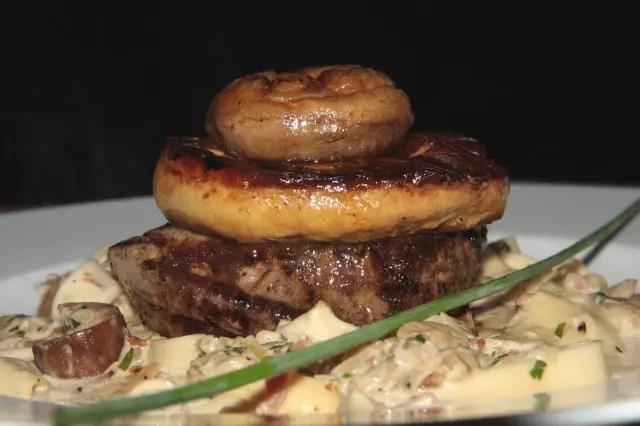
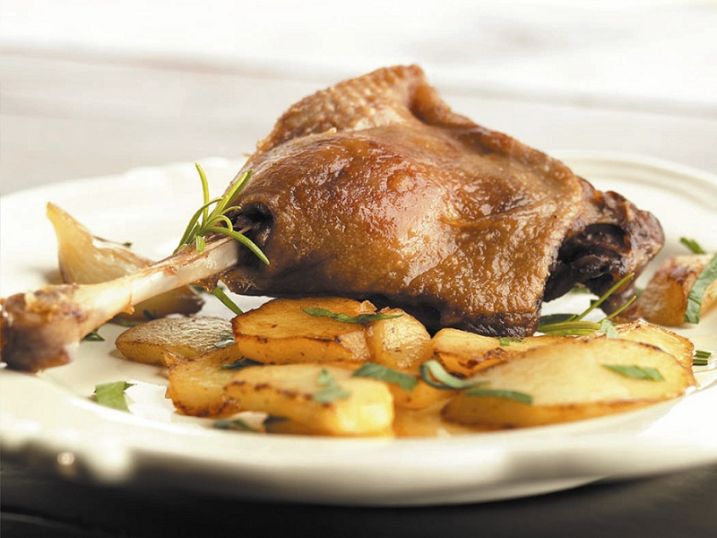
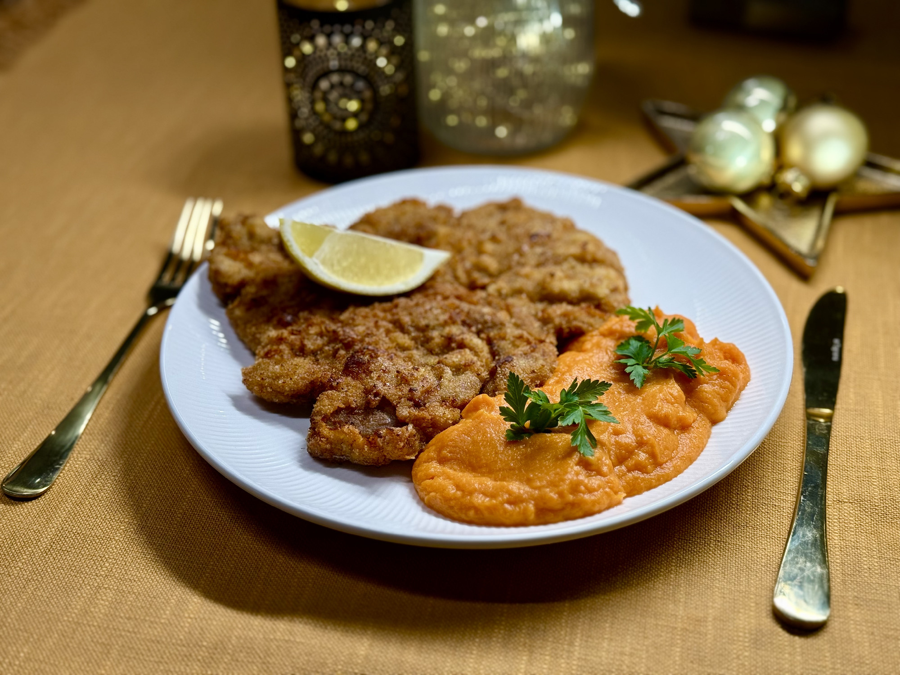

Bélszínsteak vargányamártással
Érlelt marhabélszín, erdei vargányagomba, tejszín, kakukkfű, fokhagyma, vajon pirított hercegnőburgonya.

Rozmaringos kacsacomb
Ropogósra sült kacsacomb, friss rozmaring, narancsos-gyömbéres lilakáposzta-lekvár, házi burgonyafánk.

Klasszikus borjúbécsi
Zsemlemorzsában rántott borjúkaraj, citromkarika, petrezselymes vajas burgonya, hideg majonézes burgonyasaláta.
